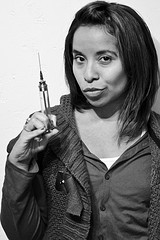
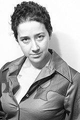
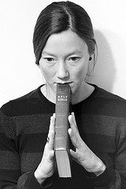
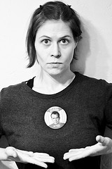
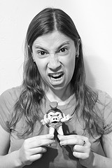
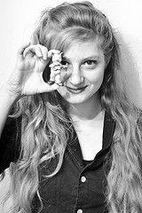

|  |
Susannah PlasterSusannah Plaster is a classically trained violist, vocalist and actress based in Boston, MA. You can find her performing in diverse venues across the U.S. and Europe, from the Paradise Rock Club in Boston, MA and the Rock Shop in Brooklyn, NY to the Peace Center in Greenville, SC and the Hindemith Music Centre in Blonay, Switzerland. Susannah is also an active studio musician, and has collaborated with The Everyday Visuals, The Anchorite, and Far from Finished. Currently, Susannah can be found in the studio or onstage with The Michael J. Epstein Memorial Library. |
|  |
Jade SylvanJade Sylvan is a writer and performance artist. She's performed her poetry all over the U.S. and in several other countries, and she's won some awards for her writing. She's also a songwriter, Boston-area Vaudevillian, and has a hip-hop side project called Madame Psychosis. |
|  |
Molly CarlisleAs the youngest of four, Molly was only too eager to be cast in whatever drama her older siblings were concocting. From campy home videos to ridiculous school plays to the silver screen, she'll seize any opportunity to put her dramatics to use. |
Molly DevonMolly Devon is an actress and artist based in Boston. As someone who holds receiving an Oscar and acting in a B-movie on the same pedestal, it's no mystery why she was drawn to TEN. Restless in the world of academia, she decided to attend college part time and constructively pursue her desire to act. Countlessly finding herself lured into horror and thriller based roles, Molly is no stranger to the world of ghosts and fake blood. Her life motto which is freeing, blunt, and sprinkled with a dash of cynicism is: All of our lives will inevitably end, so dismiss comfort and make your risks while you can. |
|
|  |
UnAmerika’s Sweetheart Karin WebbUnAmerika’s Sweetheart Karin Webb is an original member of award winning performance troupe All The Kings Men (ATKM); she holds a BFA in acting from Boston University, a certificate in Physical and Ensemble Theater from Dell’Arte International School of Physical Theater, and spent time at the London Academy of Music and Dramatic Arts. She’s toured the U.S., Canada, and London as a performer, and had her writing produced for theater. Karin has been awarded an Elliot Norton Award, and is an IRNE nominee for original work with "Elephant Tango Ensemble". “Play In The Gray” is a documentary about her troupe, and they’ve been published in the “National Gay and Lesbian Review”. She is Artistic Director of Dream Weird and Axe To Ice Productions, Karin teaches workshops regularly, was a longtime contributor and resident of Pan 9, and can be seen winters performing in The Slutcracker. |
Leah PrincipeLeah Principe is a lovely combination of dancer, burlesque performer, and actress and performs throughout the Boston area. She is most well known as a member of burlesque troupe Babes in Boinkland and a dancer in Boston's favorite holiday tradition The Slutcracker. She has performed in Montreal, Las Vegas, New York and has had the honor of dancing with the one and only "Weird Al" Yankovic. |
|
|  |
Rachel Leah BlumenthalRachel Leah Blumenthal is a writer, musician, and photographer based in Somerville, MA. Although her background is in science journalism, she can most often be found writing about food for various publications and on her blog. She currently plays flute, bass flute, and occasionally the role of a sad French mime in librarian-themed band The Michael J. Epstein Memorial Library. |
Porcelain DalyaPorcelain Dalya was born in a hospital at a very young age. Adopted by mermaids and clowns, she wanted to grow up to be a bearded lady. Sadly, due to a chemical plant spill into the ocean, that did not happen. Instead, she went into burlesque. Bring your fishing gear and catch Dalya performing with Walter Sickert & the ARmy of BRoken TOys. Dalya has also worked with the TEN production team before, starring in music videos for Darling Pet Munkee: X-Ray Specs as the first person in the video to have their clothes transform to underwear, MONSTER S-I-Z-E MONSTERS as the first date Frank goes on, Genuine Soil from Dracula's Castle as a doomed ingenue, and she gave her best Elvira and introduced the videos in Creature Double Feature! |
|
|  |
Sophia CacciolaSophia Cacciola is the award-winning singer (Boston Phoenix 2012 Best Female Vocalist) and drummer of the spycore, The Prisoner-themed band Do Not Forsake Me Oh My Darling, the comic-book-ad-inspired Darling Pet Munkee, drummer of The Michael J. Epstein Memorial Library, and 1/3 of the children's band Space Balloons. She has been involved in the production of, and/or starred in several short films and music videos, including the TIME Magazine Most Creative Video #6 of 2011, "Episode 1 - Arrival," and she recently performed in a small speaking role for the forthcoming indie feature film Fat (starring Mel Rodriguez). |